Viewing your data in 3D
The background to viewing your data in 3D will be covered in the lecture segment at the beginning of the class, and the presentation and any other supporting materials will be available in Minerva. The lecture segment should help you to understand why you are doing these exercises. If you still aren’t sure, please ask Clare.
Learning outcomes
When you have completed this section of the workbook you should be able to
Introduction
Once you have created features and data in GIS you can view the map in 3D and see how your data relates to other features. You’ll be able to export 3D views from QGIS to include in other reports and layouts.
Data to download
Borehole data
Download the Boreholes.csv file from Minerva and load into QGIS using the instructions you used to load the gravity data points.
Download DTM files from Digimap
You’ll need to start by obtaining height data from Digimap and converting it for use in QGIS.
DTM stands for Digital Terrain Model. You may also come across DEM which stands for Digital Elevation Model. There are differences in the data but both can be treated in the same way.
Use Digimap O.S. Data Download
- Search for
Llanbedr- it’s the one in Gwynedd - and download data for at least the area shown below (a bit more than this doesn’t matter, but don’t download too much or the processing will take ages):
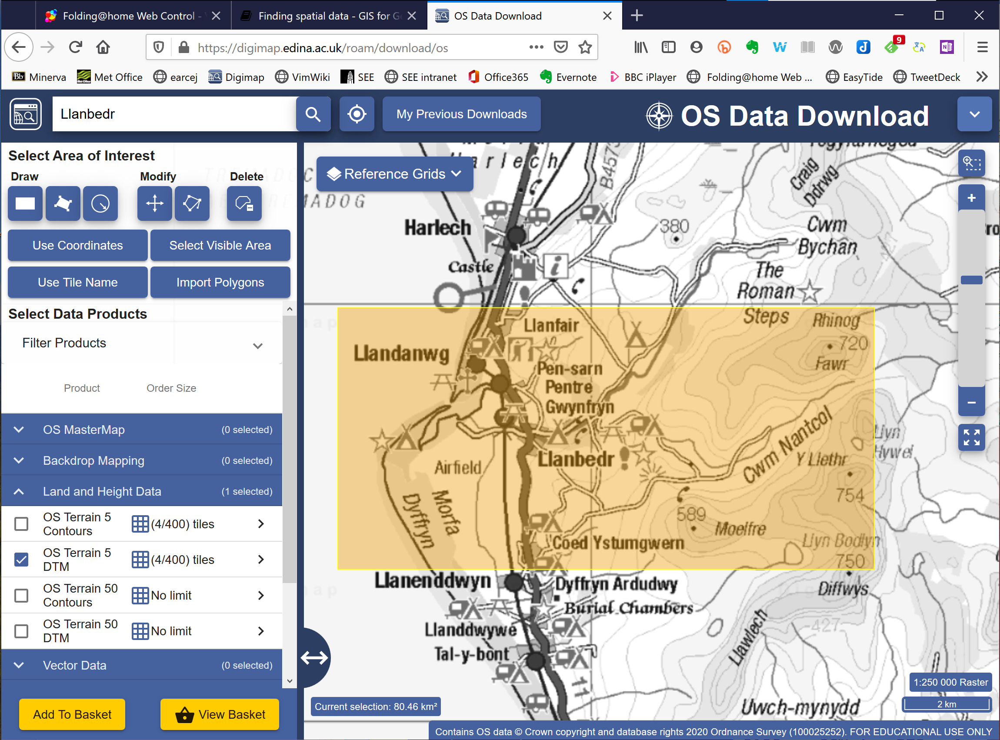
- When selecting data products go to
Land and Height Dataand selectOS Terrain 5 DTM- make sure you select the DTM not the contours. - Once you have the data in the basket select the download format as
ASC
Save the resulting download to your disk and unzip it.
Producing “seamless” datasets from more than one tile of dtm data
If you are using more than one tile of dtm data (which you should be for this exercise) follow the instructions below to combine the multiple files into one single one. This will make it possible to use the files as a continuous surface in maps and 3D scenes. During this process we will also convert the multiple asc or tif files into one single tiff file.
- If QGIS isn’t already open, open it now.
- Use the Browser panel to find the dtm files that you downloaded from Digimap and check the
Layer Propertiesof one of the.ascfiles. - In particular look for the
CRSand theData typeand make a note of both then close the layer properties.
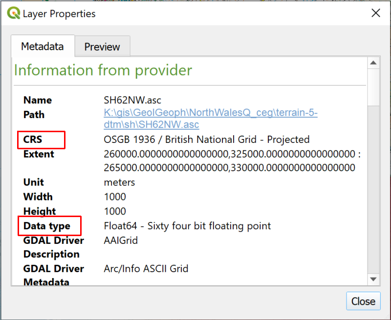
- Go to
Raster > Miscellaneous > Merge...
This opens one of the QGIS tools.
- In the Merge dialog click on the three dots button next to the
Input Layers - Click on
Add File(s)...and navigate to the folder containing your dtm data - Use the dropdown next to
File name:to selectArc/Info ASCII Grid (*.asc *.ASC)- this will restrict the files that you’ll see to just that extension - Add all of the files with an extension of
.ascby selecting them and clicking onOpen. They should appear on a list and each of them should be ticked. - Click on
OKto add them to the tool.
The Input layers field of the Merge dialog should now tell you the number of input layers that you have added.
- For the
Output data typeselect the data type that you found in the Layer Properties above. In my case this isFloat64 - Go down to the
Mergedfield which currently says[Save to temporary file]and use the button at the end of the field to selectSave to file... - Browse to the folder in which you want to store the file and give it a name, such as
MergedDTM - The file will automatically be given the extension of
tif - Click
Save - Then click to
Run
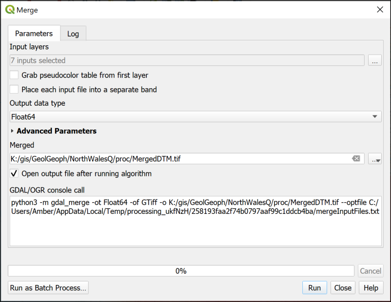
The tool should run and add a new layer to your map. You can Close the dialog when it runs successfully.
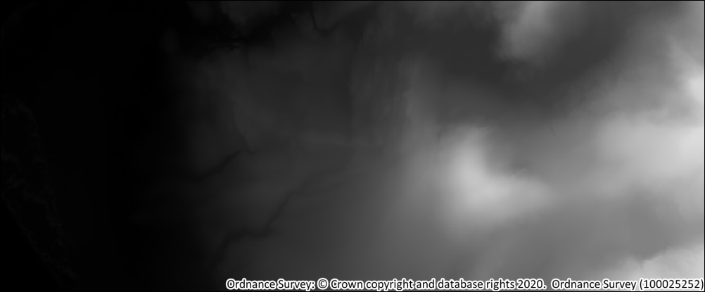
Check that the file looks OK, and also check that the coordinate reference system is set correctly
- Right-click on the layer and go to
Properties - Look at the
Informationtab and check that theCRSis correct.
If it isn’t you will need to reproject the file to the same CRS as your map.
You don’t need this layer to be visible so move it to the bottom of the list in the Layers panel and turn it off.
Creating a profile graph
QGIS enables you to draw a profile graph across your map using z values in your surface raster files or heights above sea-level. You now have both of these layers on your map so can try both of them.
- You’ll need to start by installing the
Profile toolplugin by going toPlugins > Plugin Managerin the same way as you installed the QuickMapServices plugin. - Once you have the plugin installed you will gain a button on the toolbar which has the tooltip
Terrain profile
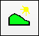
- Click on the
Terrain Profilebutton
The Profile Tool window should open at the bottom of your screen.
The first thing you need to do is select the layer that contains your z or height data. In this case you have two possible layers on your map.
- Select your gravity surface in the Layers panel - mine is called
IDWgravyours may be something different - On the Profile Tool panel click
Add Layerunder the box on the right - the layer should appear in the box - Now check that under
OptionstheSelectionis set toTemporary polyline - Left-click somewhere on the map on the west of your gravity layer
- Then double-click (to end the line) somewhere on the east of your gravity layer
Immediately a profile should be drawn in the window on the Profile tool panel.
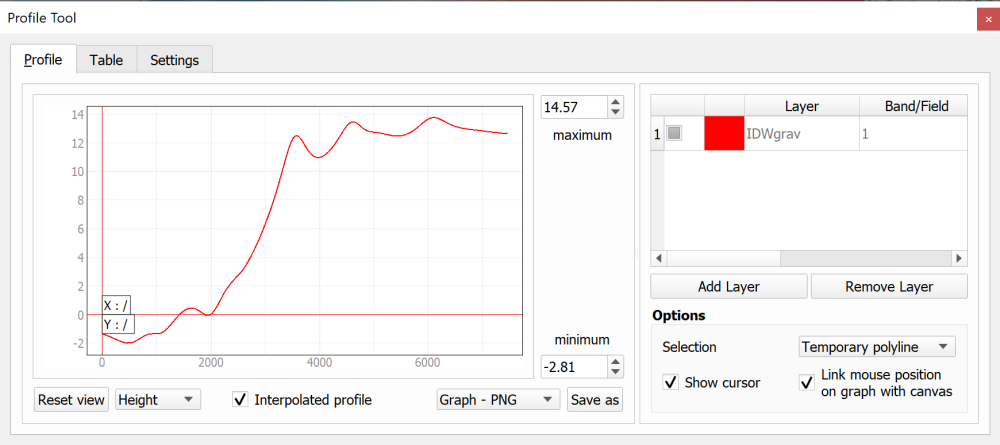
Adding a second elevation surface
Now try adding the
MergedDTMlayer too (you may have called it something different). You do it in exactly the same way, except that you already have a line across your map.If you click on the colour patch next to the MergedDTM layer you can change it to a different colour so you can see which profile refers to which data surface.
Unfortunately it isn’t possible to edit the y axes independently so that you have the two profiles on different scales.
- For the assessment you only need to include the profile across the gravity surface, so for now click on
Remove Layerand remove the DTM layer.
Using a feature class for the line on the map
So far you’ve only used a temporary line on the map for the line of the profile. When you close your map this line will disappear. If you are going to include the profile on the map layout you also need to show the line of the profile on the map. To do this you can create a feature class and digitise a line across the map. Refer back to the chapter on Creating data by digitising for a reminder of how to do this.
Once you have a digitised line
- Select the line layer in the Layers panel and then use
Select Features by Area or Single Clickfrom the toolbar at the top to click on the line and select it (it should turn bright yellow) - Open the Profile Graph panel and add your gravity surface as before
- Under
Selectionclick onSelected polylineorSelected layer
The Profile should appear in the window to the left.
Saving the profile graph
You can save your profile graph to an image to add to other work
- It’s a good idea to untick
Show Cursorbefore you save the graph - Use the dropdown at the bottom of the profile to select
Graph - PNG - Then click on the
Save asbutton - Navigate to where you want to save the graph and give it a name.
The result png file can be added to reports or map layouts - but see below.
If you have selected a line on the map it is a good idea to Clear selections once you have saved the graph.
Adding annotation to a profile graph
This plugin is fairly basic. It simply allows you to draw a line across a map and show the profile. If you are going to include a profile graph on a map layout or in a report you will need to annotate it with titles, labels etc.
To do this you need to save the graph as SVG format
- It’s a good idea to untick
Show Cursorbefore you save the graph - Use the dropdown at the bottom of the profile to select
Graph - SVG - Then click on the
Save asbutton - Navigate to where you want to save the graph and give it a name.
Once you have the SVG format graph you can open it in a vector graphics program, such as Inkscape1, CorelDraw or Adobe Illustrator, then edit it as required.
Further information
- For a video on the Profile plugin see Using the Profile Tool plugin in QGIS by Hans van der Kwast.
Viewing 3D topography in QGIS
Sometimes being able to view your data in 3D can really help you to interpret it. QGIS has a couple of effective ways of allowing you to do this.
- Start with your map set up to show the 1:25 000 background map and the gravity surface.
- Make sure you have the merged DTM in your project, but it doesn’t need to be visible.
3D Map View
The simplest way to view a map in 3D is to use the inbuilt tool. This is fine, but fairly limited.
- Click on
View > New 3D Map View
On my computer this always opens far too small so I have to use the mouse to extend the window.
The initial view looks the same as the map in the main view. You have to tell it where to get the 3D elevation data from.
- Click on the button with the little spanner on the toolbar - this gives you the
3D Configurationwindow. - Select
Terrain - Drop down the
Typebox and selectDEM (Raster Layer) - In the
Elevationbox select your merged DTM layer. - Click
OK
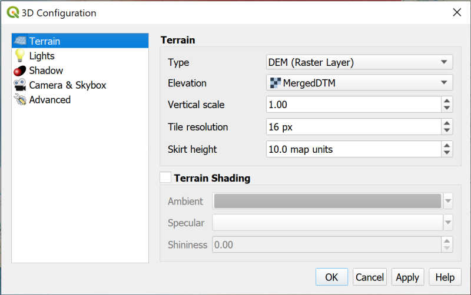
You should notice a slight difference, but as you are still looking down on the view from above you won’t see the full 3D effect yet.
Use the mouse wheel and buttons, or the controls in the top right of the window to have a look at your 3D scene.
You can try out some of the other settings from the 3D Configuration settings to see what happens.
It is possible to export this view as an image
- click on the
Save as image...button on the toolbar.
Close the view by clicking on the cross at top right.
The Qgis2threejs plugin
QGIS has a plugin which gives more options for viewing your data in 3D, including extruding vector layers, and it is worth installing this and trying it out.
Installing the plugin
- Install the
Qgis2threejsplugin in the same way you’ve used for other plugins
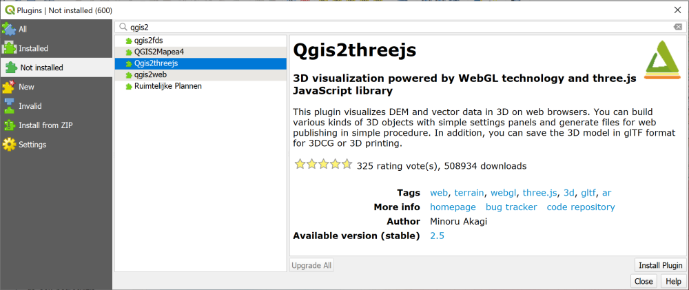
Creating a 3D view
Warning
Note that if you have already run the QGIS 3D viewer you will need to close it, then close QGIS and reopen your map before you run the Qgis2threejs plugin.
- You can open the plugin either by clicking on the button on the toolbar or by going to
Web > Qgis2threejs > Qgis2threejs Exporter
The window that opens will have a blank main window and a list of your layers on the left.
- Under the
DEMheading in the layers on the left click to put a tick next to your merged DTM layer (remember to some extent DEM and DTM are the same thing).
Your map should appear and should already be shown as a 3D view.
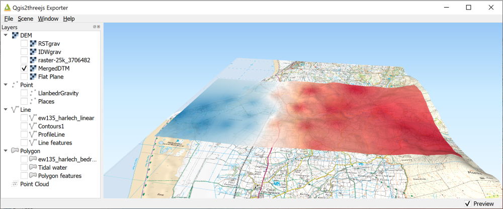
- Use your mouse to navigate in the scene. The mouse wheel will let you zoom in and out. If you click on the map you get a pop-up menu with the coordinates at that point and an option to zoom in to that point or orbit around it (press
Escto stop orbiting). Just have a go! - Press
F5(reset) to get back to the original view - Go to
Scene > Scene settings.... In this view you can change theVertical exaggeration- set it to3.0and clickApplyto see what happens. Use this setting with care - for a scientific map it’s usually best to stay at1.0which is the actual vertical setting.
Exporting an image
Once you have a view that shows your data in a way that will enhance the interpretation you can export it as an image. The image can then be included in reports and map layouts.
File > Save Scene as... > Image (.png)- You can change the output size here if you wish, then click on
Save - Navigate to wherever you wish to save the image and give it a name then click on
Save.
Extruding vector layers
It is possible to show vector layers in 3D. A popular use for this is to extrude building polygons if you have the height of the roof. In this case we’ll extrude the depth of boreholes for this area.
- At the beginning of this chapter you downloaded borehole data for Llanbedr from Minerva in the form of a csv file. If you haven’t already added this to your map do so now. Remember that you’ll need to add this in the same way that you did the gravity points.
- Have a look at the attribute table and in particular the
LENGTHfield - this is the depth of the borehole below ground-level.
Now you have the vector layer ready to extrude.
- Open the Qgis2threejs plugin again. Your borehole layer should be visible in the left-hand menu now.
- Put a tick in the box next to the layer. You should be able to see a series of spheres above your map.
- Right-click on the boreholes layer in the Layers list and go to
Properties- Change the
Object typetoCylinder - Under
Z coordinatechangeModetoRelative to "MergedDTM" layer(or whatever your DTM layer is called) - Under
Styleyou can change the colour and opacity - Under the
Heightbox drop down the box and select theHEIGHTfield
- Change the
- If you click
Applynow you should see your points extruded above the map. But these are boreholes - they should go downwards…- The
Heightfield is set toExpressionso there is anEsymbol on a button to the right of the field. Click on this now and enter the following expression.
- The
“LENGTH” * -1
- Once you’ve done that click
OKand then click onOKagain.
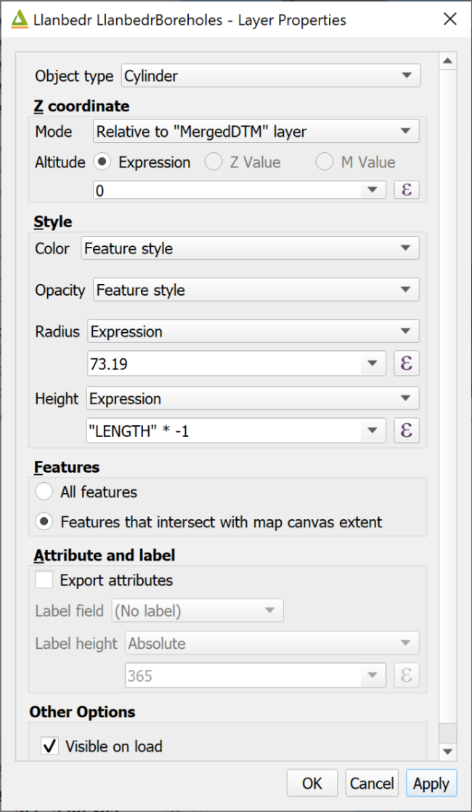
Your cylinders should disappear leaving only a patch on the terrain. If you use the mouse to navigate to under the land surface you will be able to see the longest borehole - this is the Mochras Borehole. But what about the others?
- Right-click on the DTM layer in the Layers list and go to
Properties - Untick
Build sidesand tickBuild frame - Click
OK
Your scene should redraw and you should be able to see all of the points extruded downwards. You can make these more obvious by changing the expression in the properties of the point layer to increase all of them, e.g. by doing * -2 instead of * -1, but that does make the Mochras Borehole very long indeed!
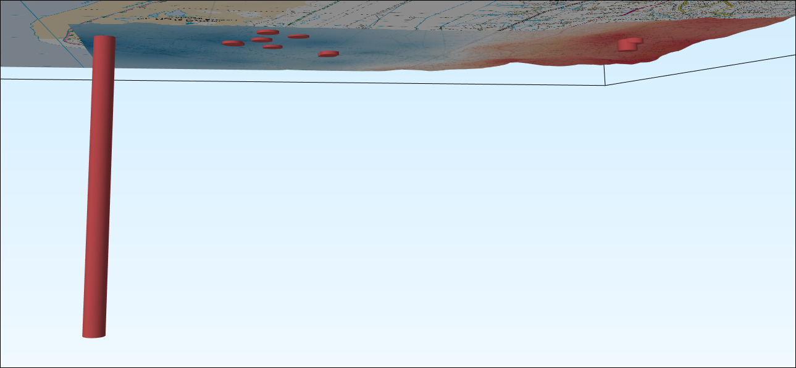
Again, this can be exported as an image by going to File > Save scene as... > Image (.png).
Further information
- If you want to find out more about Qgis2threejs see the tutorial by Alasdair Rae.
Recommended reading: Elevation and 3D mapping
The general books in the module reading list2 include sections on elevation and 3D mapping.
- For a quick overview look at Darkes (2017) - pages 46-47 look at Relief.
- Heywood (2011) has a section on Modelling the Third Dimension on pages 99-100.
- Longley (2015) covers User Interation and Representation in 2.5-D and 3-D on pages 282-284.
-
Inkscape is OpenSource and freely available to download and install on Windows, Mac and Linux. If you want to learn how to use it I have created Interactive Inkscape worksheets which can be downloaded from my website. ↩
-
Reading list available from Minerva and from the module catalogue. ↩